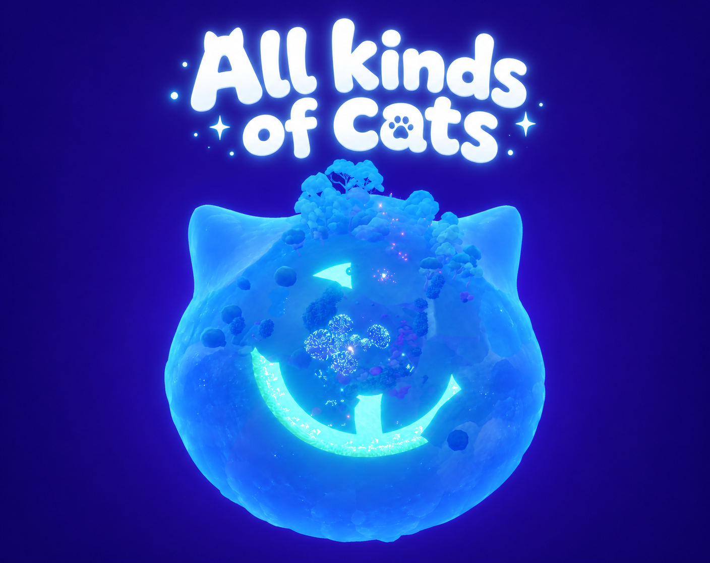
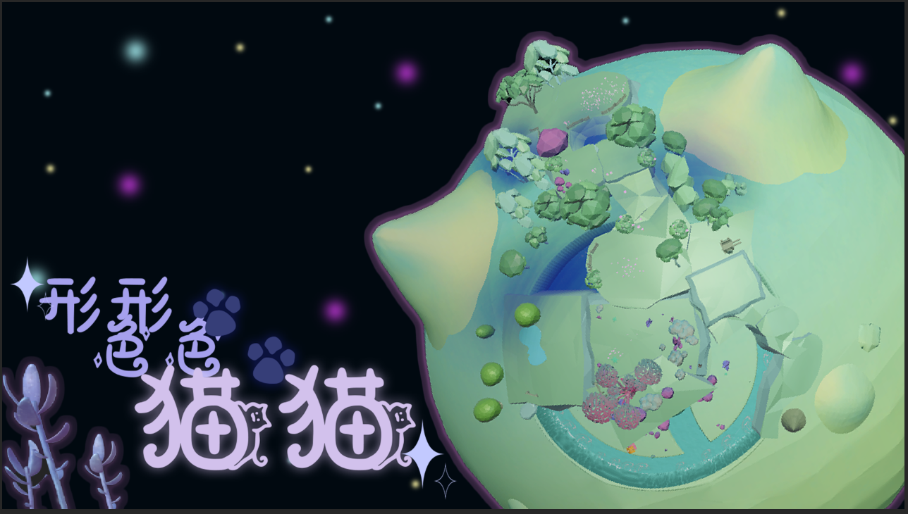

PLAY THE PROTOTYPE / 02
All kinds of cats

电脑键鼠操作 · 具体操作见游戏内提示 · Esc 释放鼠标后，可点击「停止试玩」
网页原型需要本地预览服务。通过本地预览打开 ↗
INSIDE THE GAME
在猫猫的世界里。

PLAY THE PROTOTYPE / 02

电脑键鼠操作 · 具体操作见游戏内提示 · Esc 释放鼠标后，可点击「停止试玩」
网页原型需要本地预览服务。通过本地预览打开 ↗
INSIDE THE GAME
